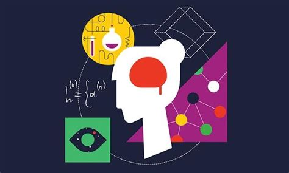
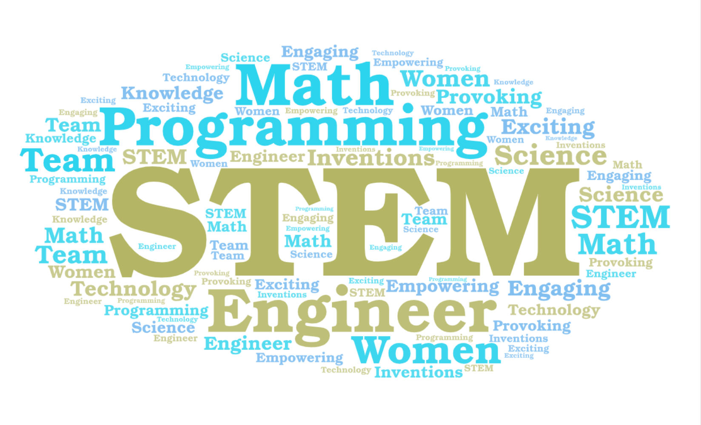

...................................................................................................................................................................................
About the creator

Hello and Welcome to my website about the gender inequalities within STEM! I am a woman who's heavily involved with this field and strives to decompose the already existing barriers.
I enjoy involving myself with STEM as much as I can whether that be through certain subjects in school such as maths and sciences or coding websites. My interest in computer programming
sprouted in the last 1 to 2 years and took off ever since. I am also an international student currently enroled in my last year of the IB Middle Years Program and transferring into the IB
Diploma Program. As a requirement for this transition, I must complete the Personal Project assignment. This passion project allows the student to dive deep into their interests and grow
their involvement. I choose this product to explore multiple global contexts: Scientific and Technologic Innovation, and Fariness and Development. Through this creating process I wish to
acheive my goals of increasing my love and knowledge of computer programming.
Cited from WomeninTech
Intentions

My main focus on developing this website and sharing it to my local and possibly global community is to shine some light on this current global issue and, hopefully, educate the target audience on false misconceptions,
actual statistics, and research. I choose to mainly work on statistics, preventions, and resources because of a research experiment I conducted with my peers. In addition, I was also persuaded into creating this website
to assist in preventing common issues that arise once young women begin their introduction into STEM: demoralizing stereotypes, loss of interest, and very limited oppertunities. This website analyzes and evaluates
multiple sources and information to compile it into a reliable and summarized hub of knowledge.
Created with WordArt

Quoted from: Dr. Heather Wiliiams, Formatted by: Totaljobs